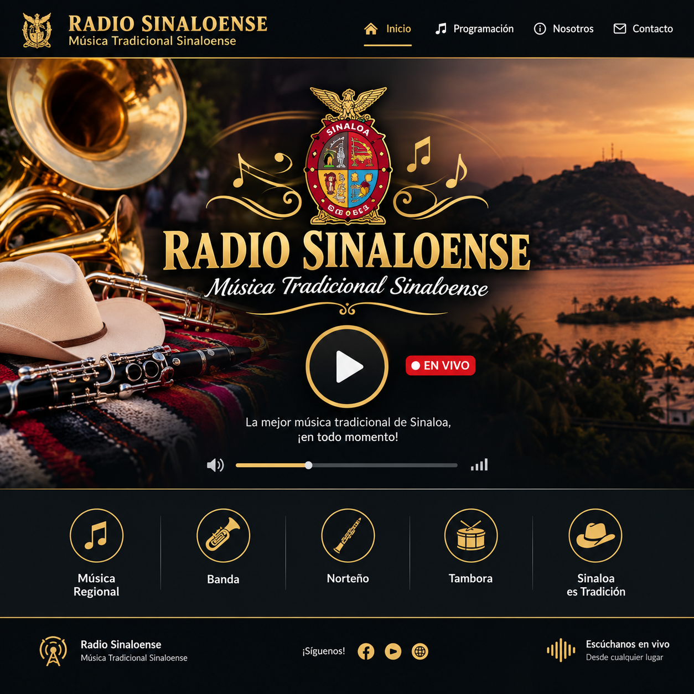

EN VIVO
Escucha Radio Sinaloense
Presiona reproducir para escuchar la transmisión.
Si no comienza el audio, revisa tu conexión o confirma que el enlace de transmisión de Radio.co esté activo.
♫Música regional
Tradición que nos une
🎺Banda sinaloense
El sonido de Sinaloa
🎼Norteño
Ritmos de nuestra tierra
🥁Tuba y tambora
¡Puro sabor sinaloense!
La música de Sinaloa, donde estés
Disfruta la música tradicional sinaloense desde tu teléfono, tableta o computadora. Guarda esta página en la pantalla de inicio de tu iPhone para encontrar la radio fácilmente.